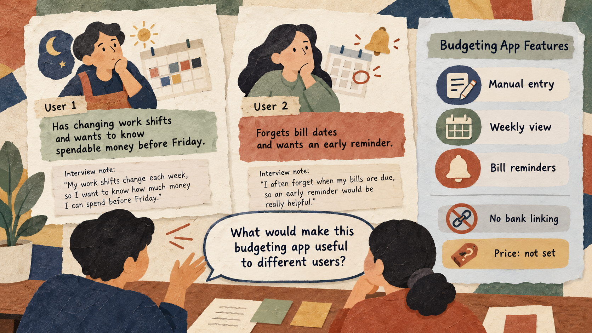

Situation
The problem
A team is making a budgeting app but does not know what different potential users need or what might stop them from trying it. Profiles based only on age or stereotypes can produce generic messages.

3 hours: 50-minute lesson, 10-minute break, 50-minute guided practice, 10-minute break, 50-minute applied practice, and 10-minute wrap-up.
A team is making a budgeting app but does not know what different potential users need or what might stop them from trying it. Profiles based only on age or stereotypes can produce generic messages.
Use short interview evidence to build two distinct, testable customer profiles and write one relevant message for each.
Practice material: Use the practice material supplied in the session Markdown.
Do not replace missing information with guesses.
Keep each concept tied to the practical decision.
These examples come from the current session scenario.
Create two customer personas for our budgeting app.
Make both personas excited to buy and write persuasive ads.
Keep the source, task, constraints, and output check visible.
Use only the four fictional interview notes and product facts below. Create two profiles based on different stated needs. For each, include the goal, exact supporting note, barrier, and one unanswered question. Do not infer age, income, or willingness to pay.
Write one short message for each profile using only available app features. Address the stated need. Do not claim bank linking or guaranteed savings. Label any untested claim as a hypothesis.
Use the complete case and instructions from the session Markdown.
Use the complete case and instructions from the session Markdown.
Check the output before sharing or acting on it.